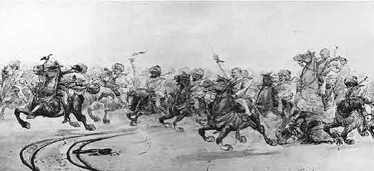
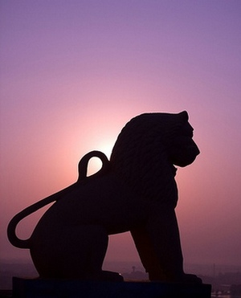

History Of Odisha
Temples & Monuments
Wildlife
Heritage Odisha
Art & Craft
Tourist Spots
The history of Orissa can be divided into ancient, medieval and modern history. Orissa was known as Kalinga during the ancient period. Kalinga had been the cradle of civilization of different dynasties of rulers.

During the ancient times, the Kalinga region was untouched by the influence of Brahmanical culture. Most of the local inhabitants of the bygone era were the tribal communities who followed completely different cultural traditions. However, by the 15th century, the region was affected by the Brahmanical traditions and the prevailing social customs slowly began to change.

The Kalinga war played a dominant role in changing the social, political and economic condition of the region. The battle between Emperor Ashoka and the King of Kalinga had an impact on the historical development of Orissa.
Emperor Ashoka was highly moved by the pitiable condition of the innocent people who lost their near and dear ones in the ruthless fight between two rulers. After the Kalinga War, Emperor Ashoka adopted Buddhism and preached peace and harmony. Under the able guidance of Emperor Ashoka, literature, language, music and dance flourished during the ancient times.
In the medieval period, Orissa came under the influence of Tantrism which is the tribal form of worshipping the Supreme Being. The Yogini Cult of Orissa was one way of expressing the Tantric culture of the olden days.
Orissa played a predominant role during the Indian Independence Movement. A new social consciousness began to dominate the political arena of Orissa and the local indigenous population was inspired to sacrifice their life for their Motherland.
The history of the region provides comprehensive and cohesive information about Orissa during the ancient times.